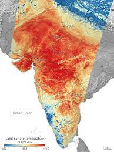

Heat Wave

Affected regions:
Central Regions
Recent disaster
Name : 2022 Heatwave in India and Pakistan
The 2022 heat wave in India and Pakistan is an extreme weather event which has resulted in the hottest March in
India since 1901. The hot season arrived unusually early in the year and extended into April, affecting a large
part of India's northwest and Pakistan. The heatwave has combined with a drought, with rainfall being only
a quarter to a third of normal. The heat wave is remarkable for occurring during a La Niña event.
Affected Areas : Several cities across India had high temperatures over 42.8 °C (109.0 °F), with Wardha
rising to 45 °C (113 °F). The heatwave has also been felt in neighboring Pakistan, where the city of
Nawabshah recorded a high temperature of 49.5 °C (121.1 °F) and Jacobabad and Sibi reaching 47 °C (117
°F).
Damage :During the 2022 food crises, India began taking steps to export more rice and wheat, in part to
fill the gaps created by the Russian invasion of Ukraine. However, the heatwave caused increasing local
prices and lower supply, issues also exacerbated by the war increasing fertilizer prices. The heat wave
occurred mostly during the final weeks of the wheat growing season, killing the plants shortly before
harvest.
The heatwave strongly impacted agriculture in India. At the same time early rainfall in India was 71% lower than
the norm. In Punjab, the main crop producer in India, 15% of the harvest was lost and in some regions even
30%.
Deaths : As of 9 May, at least 90 people have died; 25 in India, and 65 more in Pakistan, with the final
toll expected to be much higher.